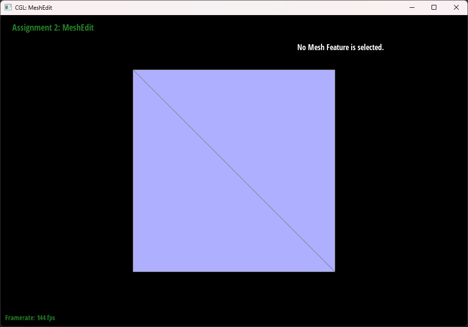
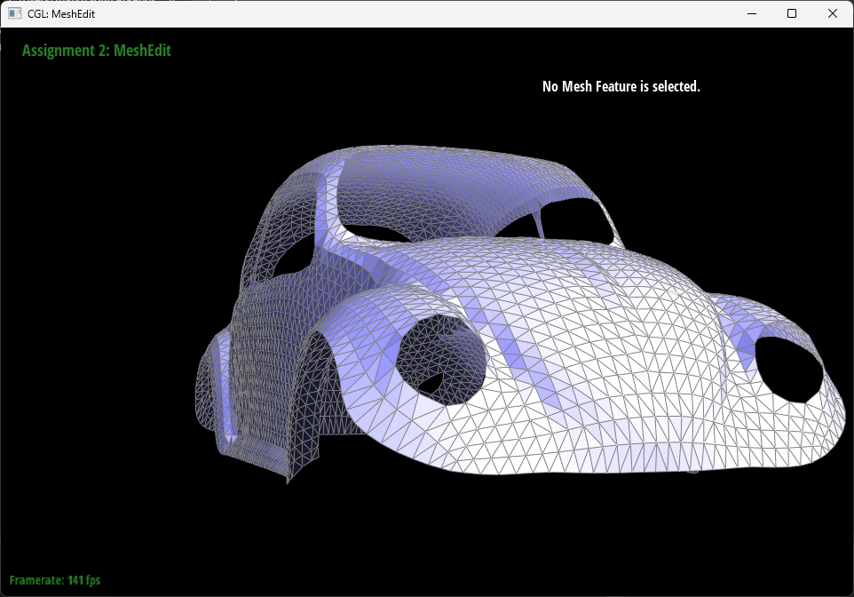
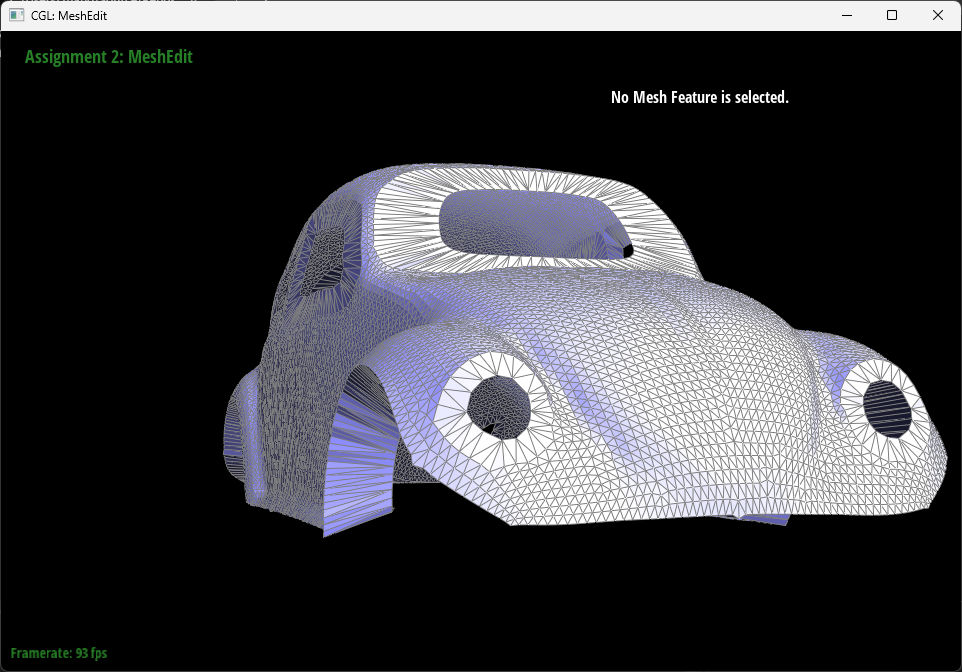

Give a high-level overview of what you implemented in this homework. Think
about what you've built as a whole. Share your thoughts on what
interesting things you've learned from completing the homework.
Section I: Bezier Curves and Surfaces
Part 1: Bezier curves with 1D de Casteljau subdivision
De Casteljau's algorithm is an iterative method to generate Bezier curves.
Given a list of n vertices and a lerp value \(0 < t < 1\), for each
pair of adjacent vertices, generate n-1 intermediate lerp vertices.
Iteratively perform this step until n=1, where there is the final point on
the Bezier curve. Repeat the process for all t values between 0 and 1, and
the set of all final points consist to the desired Bezier curve.
Below is a Bezier curve with 6 control points and another slightly
different modified one.
A Bezier curve with 6 control points
A slightly adjusted Bezier curve with modified t value
Part 2: Bezier surfaces with separable 1D de Casteljau
To generate a Bezier surface on a set of n * n control points, consider n
Bezier curve generated with n rows, each row with n control points. Taking
the point on each Bezier curve with parameter u, one can generate another
Bezier curve using these points as control points. With a parameter v, one
can calculate a point on the "second-order" Bezier curve, which is on the
Bezier surface. With all possible (u, v), both between 0 and 1, one can
generate all points to form the Bezier surface.
A teapot formed with Bezier surfaces
Section II: Triangle Meshes and Half-Edge Data Structure
Part 3: Area-weighted vertex normals
To calculate the area-weighted vertex normals for a vertex, one should sum
up all normal vectors of the faces around the vertex. To calculate the
normal vector of one of the faces, start from one of the halfedge of the
vertex, take the vertex of the halfedge, the vertex of the next halfedge
(halfedge->next()), and the vertex of the second next halfedge
(halfedge->next()->next()). These three vertices consist to the triangle
face, and one can calculate the normal vector by taking cross product of
the differences of these vectors.
To traverse to the next face, take next halfedge of the halfedge's twin
component (halfedge->twin()->next()). Repeat the process above for each
face around the vertex and sum up the normal vectors, and normalize the
sum to get the desired result.
Teapot with flat shading
Teapot with Phong shading
Part 4: Edge flip
To perform an edge flip, notice that no new edges are created, therefore
the assignments between halfedges and edges, also halfedges and their twin
complements are unchanged after a edge flip. Therefore, we can just worry
about next, vertex, face of halfedges, and the halfedge assignments of
vertex and face. One should be very careful about the next component of
the halfedge, and make sure that they form a proper loop within a face. I
encountered a bug when I tried to flip an edge, the program just froze. It
turns out to be that I was not following the halfedge's next assignments,
and I did not the proper halfedge's next pointer to the flipped halfedge,
therefore causing an infinite loop.
Original teapot
Teapot with a flip at the center
Teapot with more edge filps
Part 5: Edge split
To perform an edge split is more complicated than an edge flip, as many
new elements are created. A new vertex, three new edges, six new
halfedges, and two new faces are created and needed to be assigned to the
proper elements. For this part, as things become more complicated, I just
wrote down all parts that are in the given mesh and assigned everything
needed to each component to avoid any potential bugs. I wrote each
variable name as the example picture in the instruction (e.g.,
halfedgebc). I also found a helper function to assign elements to halfedge
is very helpful, as there are many repetitious similar assignments for
halfedges.

Original cube
Cube with some edge splits
Cube with some edge splits and flips
Part 6: Loop subdivision for mesh upsampling
To perform loop subdivision, I follow the instructions to store the new
positions into the old vertex and positions of new vertex into their
corresponding edges and I found it much easier to traverse the mesh before
the subdivision. Then, to split all edges in the original mesh and avoid
splitting any new edges, I first record all edges into a vector and split
all edges in that vector. To identify all new edges, after an edge
splitting, find the edges that do not connect to an old vertex. After this
is to flip all new edges connecting a new vertex and an old vertex. Last,
update the positions of all vertices. I encountered a bug where all the
new vertices ending up to have a position at the origin. It turns out that
I assigned the new position to the position attribute of the new vertex,
immediately after the edge flipping, which is overrided by the position
updating later.

Original bean

Bean after one loop subdivision
After loop subdivision, all sharp corners and edges become much smoother.
This is because the position of the sharp vertices are taken average with
less-sharp vertices adjacent to them. This effect can be reduced by
pre-splitting all adjacent edges to sharp vertex. Below is an example of a
loop subdivision on a cube,comparing with no pre-splitting, and with
pre-splitting on each edge adjacent to the sharp vertex at the upper
right. It is evident from the below that pre-splitting on edges near the
sharp vertices can reduce the smoothing effect of loop division.
Original cube
The cube after one loop subdivision, with sharp vertices on the
upper right and bottom left
The cube with pre-splitting around the upper right vertex, then
loop subdivision
From the above example, one can also notice that the cube becomes
asymmetric after the loop division, despite the cube itself is symmetric
around the origin. This is because the vertices-edges topology is not
symmetric. One can preprocess the cube to make the vertices-edges topology
symmetric with some edge splitting, and the resulting mesh after loop
subdivision would become symmetric as desired.
Original cube
Cube after one loop subdivision, asymmetric
Cube after two loop subdivision, asymmetric
Cube after three loop subdivision, asymmetric
Cube with some edge spliting and with symmetric graph topology